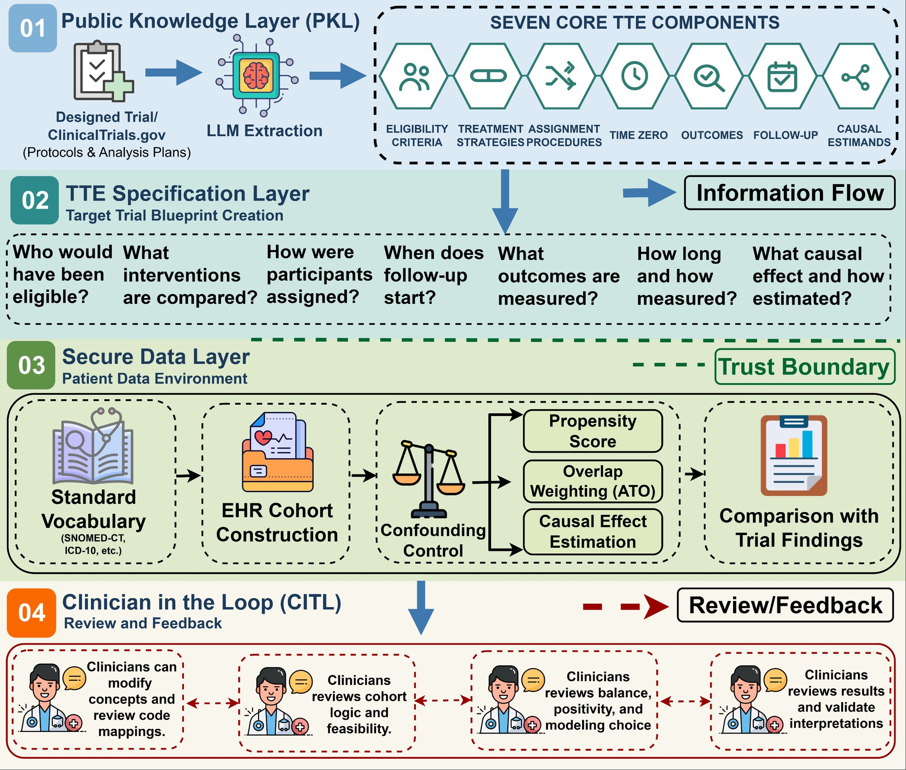
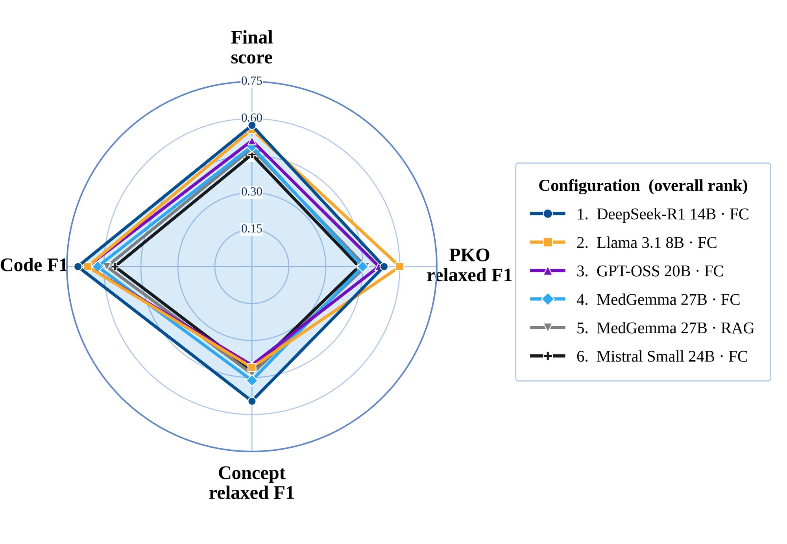
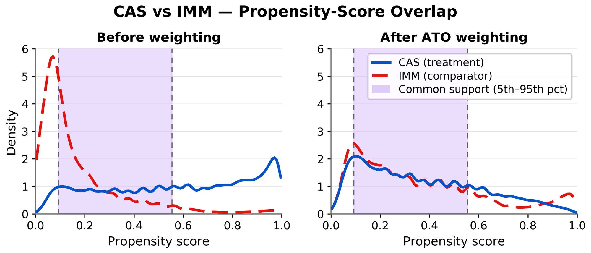
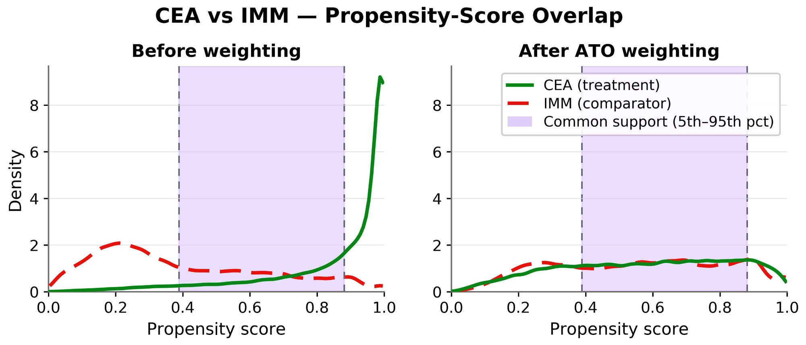
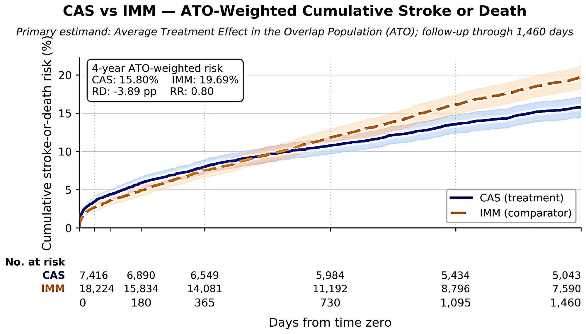
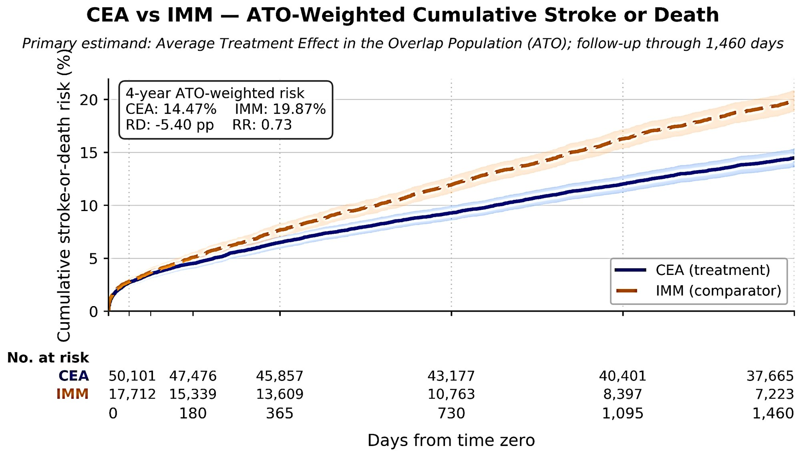
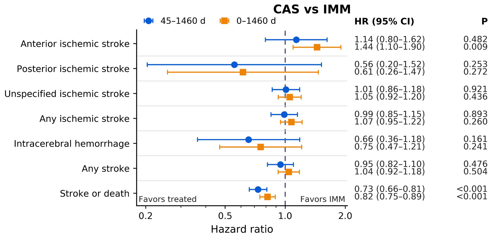
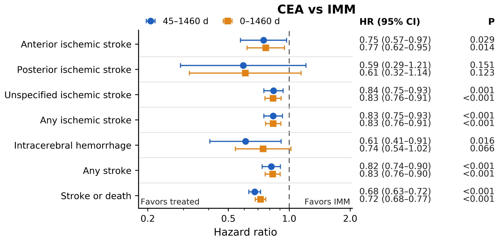
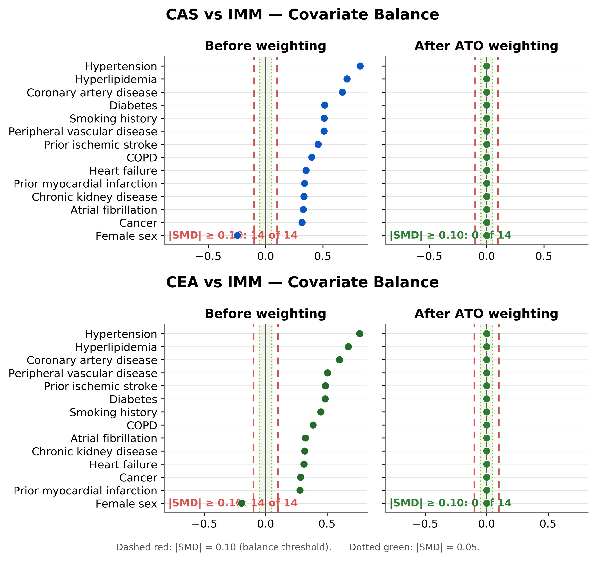
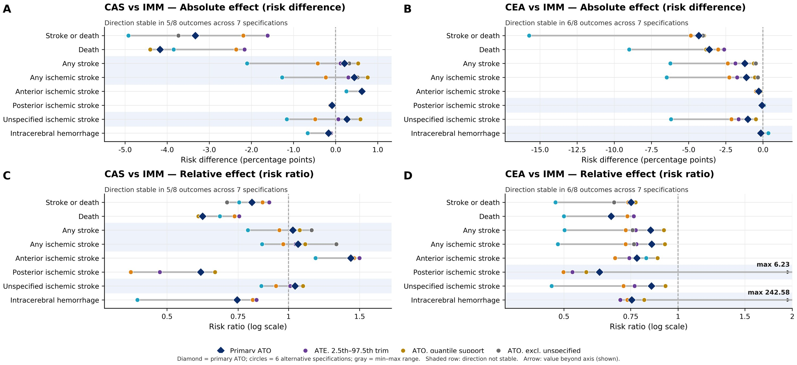

Abstract
Translating clinical-trial knowledge into executable real-world evidence remains difficult and largely manual. Large language models (LLMs) can extract information from trial information, but accurate extraction does not ensure that the resulting knowledge is clinically valid, computable, or suitable for causal analysis. We developed Protocol2TTE, a clinician-supervised framework that connects LLM-assisted trial understanding with target-trial emulation using electronic health record (EHR) data. We benchmarked open-weight LLMs using Full Context and retrieval-augmented generation (RAG). Performance was evaluated separately for trial-design knowledge, clinical concepts, and standardized clinical codes. After neurologist-led adjudication, the resulting specification was used to emulate two CREST-2 comparisons: carotid artery stenting (CAS) versus intensive medical management (IMM) and carotid endarterectomy (CEA) versus IMM.
LLM performance varied substantially across models, context strategies, and representation layers, showing that extraction accuracy alone did not ensure computability. Both EHR emulations achieved prespecified covariate balance after overlap weighting. At four years, stroke-or-death risk was 15.80% with CAS versus 19.69% with IMM (risk difference [RD], −3.89 percentage points; risk ratio [RR], 0.80) and 14.47% with CEA versus 19.87% with IMM (RD, −5.40; RR, 0.73). Both primary effects remained directionally stable across seven sensitivity specifications. Five of six (83.3%) prespecified comparisons showed directional agreement with CREST-2 randomized outcomes. Protocol2TTE provides a traceable pathway from trial evidence through LLM-assisted extraction and clinical adjudication to computable real-world causal evidence. This pathway provides a foundation for scalable, human-supervised translational AI in comparative-effectiveness research and future clinical study design.
Index Terms — Causal inference, Clinical trial, Electronic health records, Human-in-the-loop, Large language models, Real-world evidence, Target trial emulation, Translational AI.
Research Questions
How accurately and reliably can open-weight LLMs extract target-trial design knowledge, normalize clinically relevant concepts, and resolve standardized clinical codes?
See the LLM benchmark RQ2Can a clinically adjudicated trial specification be translated into an auditable EHR-based target trial emulation that produces stable causal-effect estimates under prespecified diagnostic and sensitivity analyses?
See the trial emulationKey Findings at a Glance
- Extraction ≠ computability. Benchmark scores ranged from 0.073 to 0.573 (median 0.394) across 23 runs; no model led on PKO, concept, and code layers at once.
- Full Context usually beats RAG, but not always. FC won in 8 of 11 paired models (72.7%); RAG lifted Llama 3.2 3B from 0.073 to 0.328.
- Clinician in the loop. The top configuration (DeepSeek-R1 14B, FC; score 0.573) was never executed directly. Only the neurologist-adjudicated specification reached the EHR.
- Revascularization lowered four-year stroke or death in both emulations, with all post-weighting |SMD| < 0.10, and the direction held across all sensitivity specifications.
The Protocol2TTE Framework
Four interacting layers carry a published trial from narrative text to computable, clinician-approved causal analysis. Each layer answers its own methodological question.

Public Knowledge Layer
Knowledge recovery: can the trial be turned into a structured representation without hidden protocol knowledge?
LLM extraction of the seven core target-trial components from the source trial.
TTE Specification Layer
Specification: does the recovered information answer the design questions needed to emulate the trial?
PKOs → normalized clinical concepts → standardized codes.
Secure Data Layer
Computation and identification: can the specification run on EHR data while preserving time zero, treatment definition, and confounding control?
Cohorts, propensity scores, ATO weighting, causal estimation, and comparison with the trial.
Clinician in the Loop
Oversight: no unreviewed model output is treated as executable clinical logic.
Review of concepts and codes, cohort logic, balance and positivity, and final interpretations.
Seven Core Target-Trial Components
Method: From Trial Text to Causal Estimate
Two linked stages. Stage 1 benchmarks open-weight LLMs on recovering trial knowledge. Stage 2 runs the clinically adjudicated specification as two contrast-specific EHR target trials.
A hierarchical trial-knowledge representation
The smallest independently scorable design statements, each assigned to one of the seven components. Retained after expert adjudication.
10 initially code-resolution applicable plus 7 design concepts that need no standardized code.
Resolved by constrained selection from OHDSI/Athena candidate packages, or NO_SUITABLE_CANDIDATE.
Two evidence-access strategies
Each eligible model was run under Full Context (FC) and RAG. Both conditions used the same role, instruction, schema, and grounding constraints. Only the supplied evidence differed:
RAG chunks were embedded with nomic-embed-text and ranked by cosine similarity. Retrieval logs keep the chunk ID, rank, similarity score, embedding model, and source hash.
Nine schema-guided extraction tasks
The Protocol2TTE Benchmark Score
PKO gets the largest weight because errors in eligibility, treatment, time zero, follow-up, or outcomes propagate to every downstream stage. Relaxed F1 is the primary metric. Code matching is one-to-one, so duplicate selections cannot inflate recall. The score is a comparative index, not a percent accuracy.
Human-in-the-loop adjudication
A neurologist reviewed candidate PKOs for source support, clinical validity, component assignment, attribute correctness, and EHR computability. The reference standard was frozen before model evaluation.
TABLE I — Translating the CREST-2 target trial to a pragmatic EHR implementation
| Target-trial component | Trial representation | Pragmatic EHR implementation |
|---|---|---|
| Eligibility | High-grade asymptomatic carotid stenosis and trial exclusions | Structured diagnoses, procedures, imaging proxies, demographics, and temporal phenotypes |
| Treatment strategies | CAS+IMM vs IMM; CEA+IMM vs IMM | Separate CAS-vs-IMM and CEA-vs-IMM emulations |
| Treatment assignment | Randomized assignment | Observed treatment assignment with measured baseline confounding adjustment |
| Time zero | Randomization | Contrast-specific index date aligned with eligibility and treatment assignment |
| Outcomes | Stroke/death and cerebrovascular outcomes | Prespecified computable structured-EHR outcome phenotypes |
| Follow-up | Early and longitudinal follow-up | Prespecified early and cumulative windows through 1,460 days |
| Causal contrast / analysis | Randomized treatment contrasts | ATO overlap-weighted causal contrasts as the primary analysis |
Full PKO → concept → code traceability is in Supplementary Table S1.
Algorithm 1 — End-to-end Protocol2TTE extraction, implementation, and causal estimation show
Input: \(D, E, \mathcal{M}=\{M_1,\dots,M_J\}, \mathcal{Q}=\{\mathrm{FC},\mathrm{RAG}\}, \mathcal{G}=\{\mathcal{G}_P,\mathcal{G}_C,\mathcal{G}_Z\}\), standardized vocabulary \(\mathcal{V}\)
Output: \(\mathcal{H}^*\), emulated cohorts \(\mathcal{E}^*\), treatment-effect estimates \(\hat\Theta\), robustness results \(\hat{\mathcal{S}}\), trial-concordance assessment \(\Psi\)
- \(D^* \leftarrow \mathrm{FreezeSource}(D)\)
- \(\mathcal{M}^* \leftarrow \{M_j\in\mathcal{M} : \mathrm{TechnicalScreen}(M_j)=1\}\)
- for each \(M_j\in\mathcal{M}^*\) do
- for each \(q\in\mathcal{Q}\) do
- \(D_q \leftarrow D^*\) if \(q=\mathrm{FC}\)
- \(D_q \leftarrow \mathrm{Retrieve}(D^*, e_k, K)\) if \(q=\mathrm{RAG}\)
- \(\hat P_{j,q} \leftarrow \bigcup_{k=1}^{7}\mathrm{ExtractPKO}_k(M_j, D_q)\)
- \(\hat P_{j,q} \leftarrow \mathrm{Consolidate}(\hat P_{j,q})\)
- \(\hat C_{j,q} \leftarrow \mathrm{ExtractConcepts}(\hat P_{j,q})\)
- \(\mathcal{A}_{j,q} \leftarrow \mathrm{CandidateMap}(\hat C_{j,q}, \mathcal{V})\)
- \(\hat Z_{j,q} \leftarrow \mathrm{SelectCodes}(M_j, \mathcal{A}_{j,q})\)
- \(F^{P}_{j,q} \leftarrow \mathrm{ScorePKO}(\hat P_{j,q}, \mathcal{G}_P)\)
- \(F^{C}_{j,q} \leftarrow \mathrm{ScoreConcept}(\hat C_{j,q}, \mathcal{G}_C)\)
- \(F^{Z}_{j,q} \leftarrow \mathrm{ScoreCode}(\hat Z_{j,q}, \mathcal{G}_Z)\)
- \(B_{j,q} \leftarrow \omega_P F^{P}_{j,q} + \omega_C F^{C}_{j,q} + \omega_Z F^{Z}_{j,q}\)
- end for
- end for
- \((M^*, q^*) \leftarrow \arg\max_{M_j, q} B_{j,q}\)
- \(\mathcal{H}_M \leftarrow \{\hat P_{M^*,q^*}, \hat C_{M^*,q^*}, \hat Z_{M^*,q^*}\}\)
- \(\mathcal{H}^* \leftarrow \mathrm{HITL}(\mathcal{H}_M)\)
- \(\mathcal{E}^* \leftarrow \mathrm{Emulate}(E, \mathcal{H}^*)\)
- \(\mathcal{E}^* \leftarrow \mathrm{Align}(\mathrm{Eligibility}, A, T_0, \mathrm{FollowUp}, Y, X)\)
- \(e(X_i) \leftarrow \Pr(A_i=1\mid X_i)\)
- \(w_i^{ATO} \leftarrow A_i[1-e(X_i)] + (1-A_i)\,e(X_i)\)
- \(\Omega \leftarrow \mathrm{Audit}(\mathcal{E}^*, e(X), w^{ATO})\) ▹ overlap, balance, ESS
- \(\hat\Theta \leftarrow \mathrm{Estimate}(\mathcal{E}^*, w^{ATO})\) ▹ risk, RD, RR, Cox
- \(\hat{\mathcal{S}} \leftarrow \mathrm{Sensitivity}(\hat\Theta, \mathcal{S}) \cup \mathrm{HTE}(\hat\Theta, \mathcal{G}_{HTE})\)
- \(\Psi \leftarrow \mathrm{Concordance}(\hat\Theta, \Theta_{RCT})\)
- return \(\mathcal{H}^*, \mathcal{E}^*, \hat\Theta, \hat{\mathcal{S}}, \Psi\)
RQ1 LLM Benchmark: Extraction Is Not Computability
Fourteen locally deployable open-weight LLMs were screened. Meditron 7B and BioMistral failed technical eligibility (structured JSON, schema compliance, trial-scale input). The other twelve produced 23 validated runs, 11 of them with paired FC and RAG results.
DeepSeek-R1 14B · FC
IQR 0.324–0.447
Llama 3.2 3B · FC
where FC > RAG
TABLE II — Protocol2TTE performance across LLMs and context strategies
PKO and Concept are relaxed F1. Code is code-level F1. Final is the Protocol2TTE benchmark score. “Best” is each model's stronger configuration. Phi-4 14B has a validated RAG run only. Full per-run metrics (51 fields, 5 panels) are in Supplementary Table S3.

Model Explorer
Full Context vs RAG: the context effect depends on the model
Median FC 0.438 (IQR 0.350–0.499) vs RAG 0.378 (IQR 0.326–0.407). Median paired difference +0.066.
Llama 3.2 3B rose from 0.073 (FC) to 0.328 (RAG). MedGemma 27B barely moved (0.488 vs 0.479).
Performance was not ordered by model size or biomedical specialization. Llama 3.1 8B had the best PKO F1 (0.600); DeepSeek-R1 led on concept (0.545) and code (0.706).
Selected Stage-1 configuration → clinical review → EHR
DeepSeek-R1 14B with Full Context ranked first on the prespecified composite (0.573; PKO 0.536, Concept 0.545, Code 0.706). It was chosen on the overall ranking, not on any single layer. Its output went to the post-benchmark human-in-the-loop checkpoint, and only the clinically reviewed specification was used for phenotype operationalization.
RQ2 Target Trial Emulation in Real-World EHR Data
The adjudicated specification was run as two contrast-specific target trials. Each IMM comparator was built separately, because eligibility, treatment opportunity, and empirical support differ between CAS and CEA.
Overlap & balance


Fig. 3. Propensity-score overlap before weighting and after ATO weighting. After overlap weighting, no evaluated baseline covariate exceeded |SMD| = 0.10 in either emulation (Supplementary Fig. S1, Table S5A; interval-specific ESS in Table S5B).
Primary causal effects: four-year stroke or death


Fig. 4. Primary ATO-weighted cumulative stroke-or-death risk: longitudinal absolute-risk trajectories with the four-year risks, RD, and RR. Detailed weighted estimates are in Supplementary Table S6.
Weighted time-to-event effects


Fig. 5. Hazard ratios and 95% CIs for the prespecified endpoints over 0–1460 and 45–1460 days. For CAS, anterior ischemic stroke was higher over 0–1460 days (HR 1.44) but not over 45–1460 days. Posterior ischemic-stroke estimates stayed imprecise for both contrasts.
Sensitivity & robustness
Seven prespecified specifications over the four-year horizon: ATO (primary); ATE with 1st–99th percentile trimming; ATE with 2.5th–97.5th trimming; ATT; ATO with quantile-based support restriction; ATO with stricter common support; and ATO with an alternative ischemic-stroke definition that excludes unspecified ischemic stroke.
For RD and RR together, effect direction was stable in 11 of 16 contrast–endpoint combinations (68.8%). Several secondary endpoints crossed the null under alternative specifications. The primary composite did not:
See Supplementary Fig. S2 and Table S7.
Heterogeneity of treatment effect exploratory
CAS vs IMM: no effect modification in any of the 7 subgroups (all interaction P > 0.05).
CEA vs IMM: interaction evidence for:
(0.12–0.37)
(0.68–0.81)
Not adjusted for multiple comparisons, so these are hypothesis-generating. Full results are in Table S8.
Directional Agreement with the CREST-2 Trial
Crude outcomes from the emulated EHR cohorts were compared descriptively with the published CREST-2 randomized outcomes. This is external benchmarking of direction, not numerical replication or causal validation. Causal interpretation rests on the ATO-weighted analyses.
| Contrast | Outcome / window | CREST-2 | Crude EHR | DirectionΨ |
|---|---|---|---|---|
| CAS vs IMM | Stroke/death, 0–44 d | CAS 1.3% vs IMM 0.0% | CAS 3.19% vs IMM 3.17% | Concordant |
| Late ischemic stroke, 45–1460 d* | CAS 0.40 vs IMM 1.70 /100 PY | CAS 1.61 vs IMM 1.68 /100 PY | Concordant | |
| 4-y primary outcome† | CAS 2.8% vs IMM 6.0% | CAS 5.11% vs IMM 7.12% | Concordant | |
| CEA vs IMM | Stroke/death, 0–44 d | CEA 1.5% vs IMM 0.5% | CEA 2.30% vs IMM 3.25% | Discordant |
| Late ischemic stroke, 45–1460 d* | CEA 0.50 vs IMM 1.30 /100 PY | CEA 1.29 vs IMM 1.69 /100 PY | Concordant | |
| 4-y primary outcome† | CEA 3.7% vs IMM 5.3% | CEA 3.38% vs IMM 7.35% | Concordant |
* Annualized events per 100 person-years. CREST-2 evaluated adjudicated ipsilateral ischemic stroke. The EHR benchmark used any ischemic stroke, because structured data could not establish laterality relative to the target carotid artery.
† CREST-2's primary outcome was stroke or death through day 44, then ipsilateral ischemic stroke through four years. The EHR analysis used the prespecified computable proxy.
Ψ Concordant means the crude EHR revascularization-vs-IMM contrast had the same direction as the CREST-2 contrast; it says nothing about magnitude or significance. Full detail is in Supplementary Table S9.
Supplementary Material
Every supplementary table can be browsed, searched, and sorted below, and downloaded in its original format.
Supplementary Figures


Supplementary Tables
Main Contributions
A hierarchical framework that translates trial knowledge into PKOs, normalized clinical concepts, and standardized codes, the representational bridge that downstream computability depends on.
An auditable benchmark of heterogeneous open-weight LLMs under Full Context and RAG, scored separately at the PKO, concept, and code layers.
A separation between LLM generation and executable clinical logic, through a frozen, clinically adjudicated reference standard, constrained code resolution, and human-reviewable intermediate representations.
Downstream utility, demonstrated by running the adjudicated CREST-2 specification as explicit target trial emulations in longitudinal EHR data.
Diagnostics-first causal evaluation: overlap and balance diagnostics, complementary estimators, sensitivity analyses, and HTE, rather than a single effect estimate.
Limitations
- Single trial use case. Generalizability needs evaluation across more trials and clinical domains.
- EHR fidelity. Structured data cannot reproduce every CREST-2 element, especially detailed imaging and carotid laterality, so some definitions and outcomes rely on computable proxies.
- Residual confounding. Despite strong measured-covariate balance, unmeasured confounding remains possible. The ATO estimates apply to the empirical overlap population.
Looking ahead
- Extend across multiple trials, diseases, institutions, and EHR data models, and quantify how errors propagate from PKO to concept, code, cohort, and estimate.
- Use uncertainty-aware review to focus clinician attention on ambiguous or high-consequence outputs.
- Use agentic AI to coordinate retrieval, specification, computability assessment, and human review, linked to patient-level digital twins for adaptive trial design.
BibTeX Citation
The citation will be updated with the final author list and venue after publication.
@article{protocol2tte2026,
title = {Protocol2TTE: From Clinical Trial Knowledge to Real-World Causal
Evidence Using Large Language Models and Target Trial Emulation},
author = {Anonymous Authors},
journal = {Under review},
year = {2026}
}